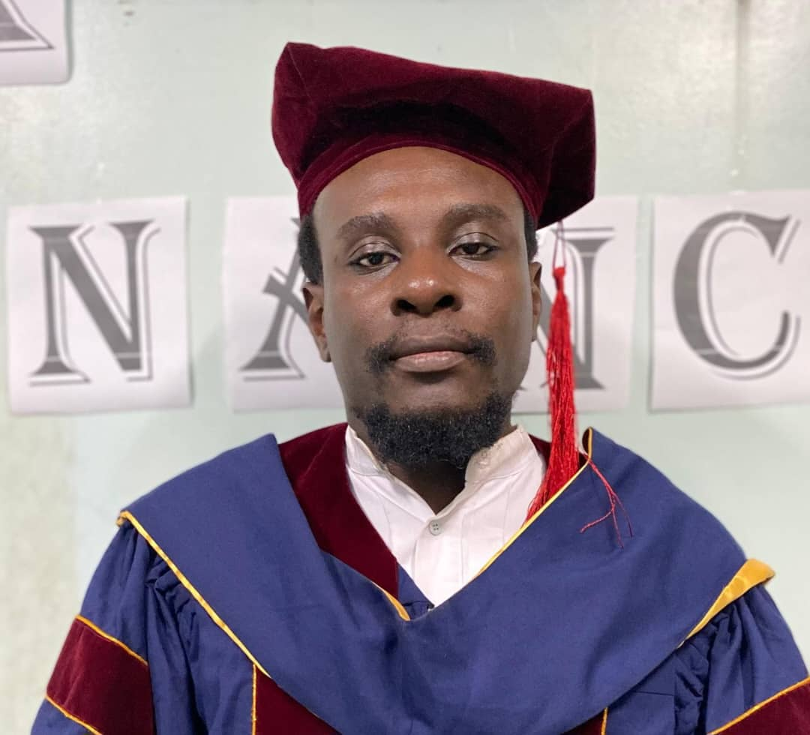

Professor Paul N. Mobit
Founder & Chief Executive Officer, Cameroon Oncology Center
Professor Mobit supports the integration of clinical oncology, research, professional education and institutional development at COC.

Clinical care, education and research are connected at COC. Our main campus also hosts the Cameroon Oncology Center School of Health Sciences, part of the African University Institute of Science and Technology.
COC combines comprehensive cancer care with education, research and professional development so that clinical experience can strengthen the future oncology workforce in Cameroon and the region.
COC clinicians, scientists and collaborators study cancer care delivery, outcomes, radiotherapy, imaging, nutrition, tele-oncology and other areas relevant to African oncology practice.
The COC School of Health Sciences operates from the main campus as part of the African University Institute of Science and Technology.
COC sponsors medical residents training in oncology and surgical disciplines needed to expand specialist capacity.
Training relationships with universities and teaching hospitals support residency education, clinical rotations and professional exchange.
These figures reflect the institutional academic commitments already established by COC.
The Cameroon Oncology Center School of Health Sciences operates from the COC main campus and forms part of the African University Institute of Science and Technology (AUIST).
This creates a direct bridge between academic instruction and a functioning comprehensive oncology environment where learners can observe multidisciplinary cancer care, diagnostic services, radiotherapy, medical oncology, surgery, nursing, pharmacy, imaging and supportive care.
The photographs below are original uploaded photographs. No AI-generated portraits are used.
Professor Mobit supports the integration of clinical oncology, research, professional education and institutional development at COC.

Supports academic administration and the university's educational activities connected with the COC campus.
COC currently sponsors four medical residents in specialties that directly strengthen comprehensive cancer care.
COC collaborates with universities, teaching hospitals and cancer centers in Cameroon, Africa, Europe, the United States and India. The scope varies by institution and includes training, residency support, clinical collaboration and professional exchange.
Residency collaboration supporting Medical Oncology and Radiation Oncology training.
Institutional and academic collaborator.
Clinical Oncology training collaboration.
Clinical residency collaboration in oncology.
Institutional collaborator.
Institutional collaborator.
International clinical rotations and professional exchange.
Institutional and clinical collaborator.
Over the past decade, COC faculty, scientists and research collaborators have published more than 25 papers. The research program is intended to document real-world oncology practice, evaluate outcomes and contribute African evidence to the international cancer-care literature.
Selected work has addressed radiotherapy implementation, tele-oncology, metastatic cancer patterns, medical physics quality assurance, nutrition and innovative treatment techniques.
Contact Cameroon Oncology Center or visit the African University Institute of Science and Technology for academic program information.